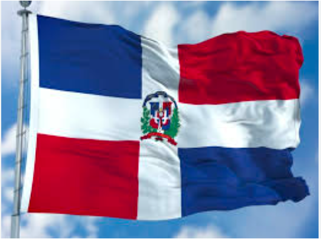

La República Dominicana obtuvo su independencia el 27 de febrero de 1844. Comparte la isla La Española con Haití y tiene una rica historia influenciada por culturas indígenas, europeas y africanas.
Historia
Símbolos Patrios
Bandera, escudo y el Himno Nacional.

Extensión Territorial
La República Dominicana tiene una extensión aproximada de 48,442 km².
Provincias
- Santo Domingo
- Santiago
- La Vega
- San Cristóbal
- Puerto Plata
Lugares Turísticos
- Punta Cana
- Santo Domingo (Zona Colonial)
- Puerto Plata
- Samaná